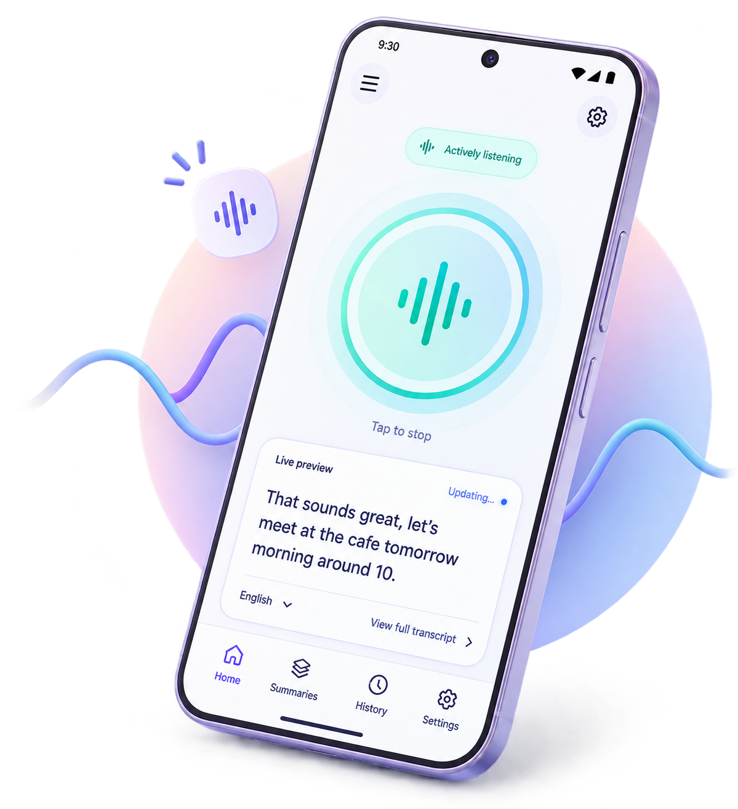
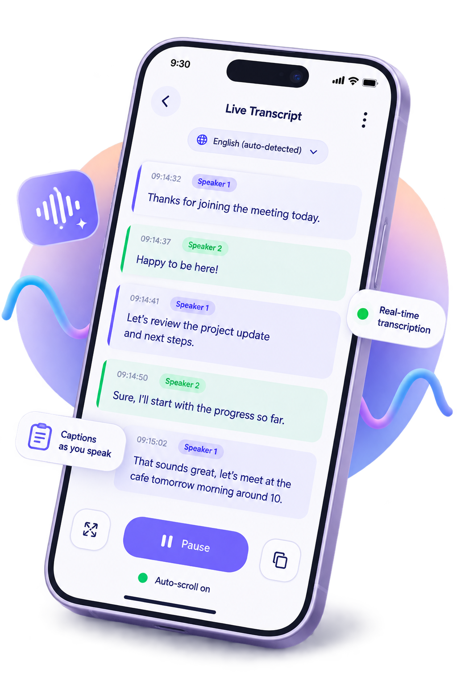
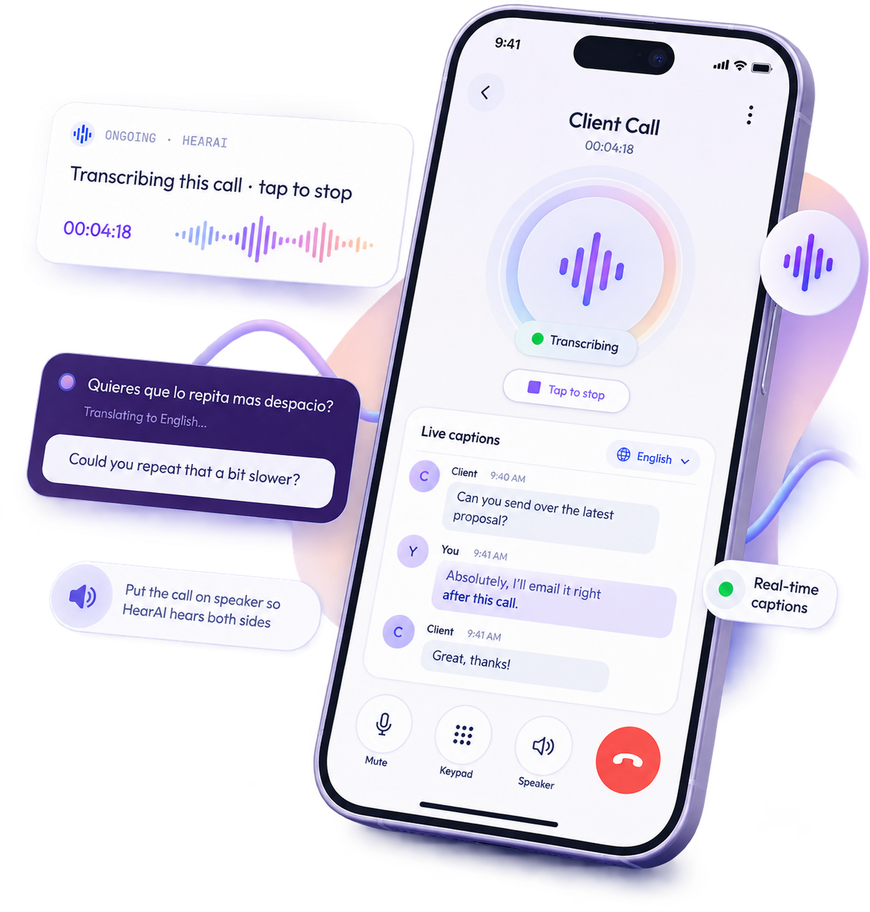
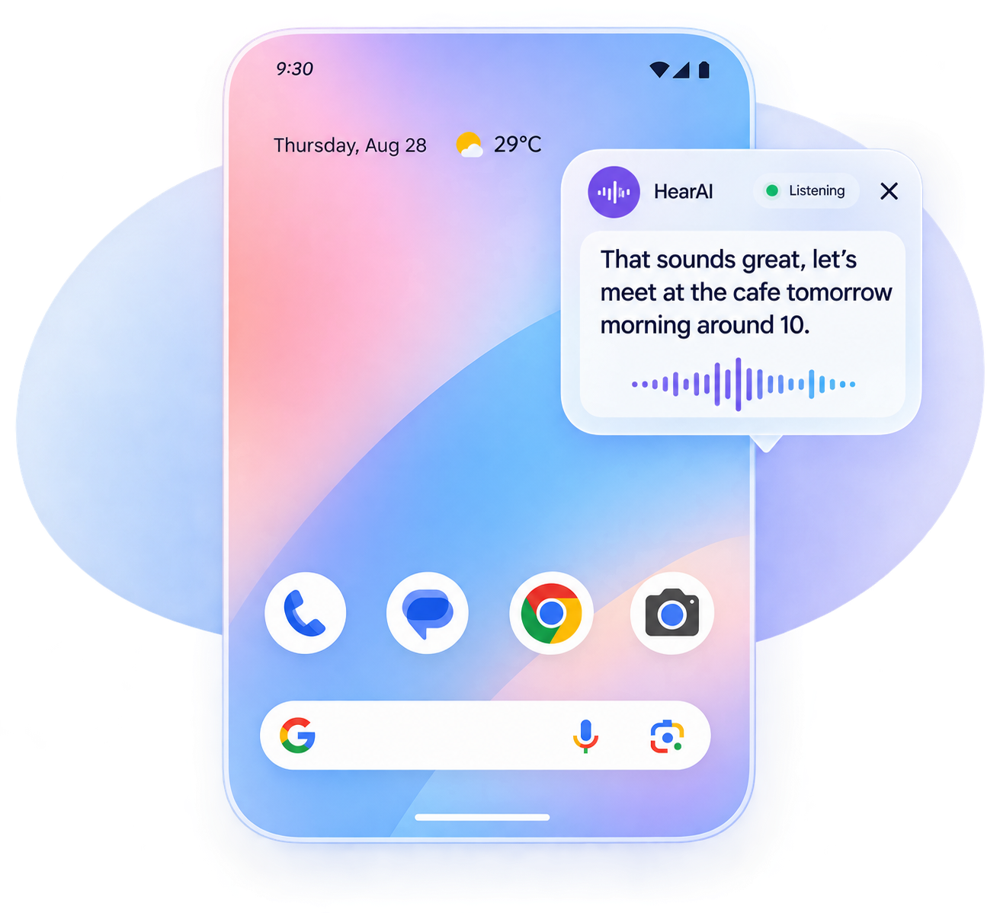
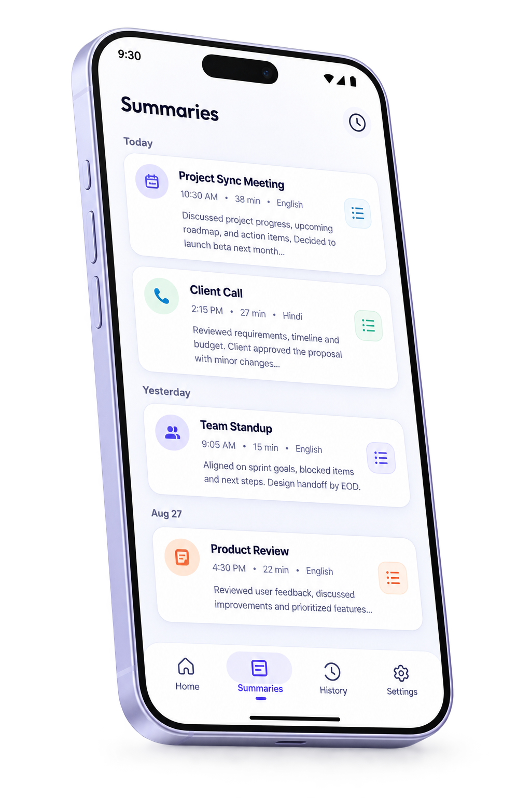
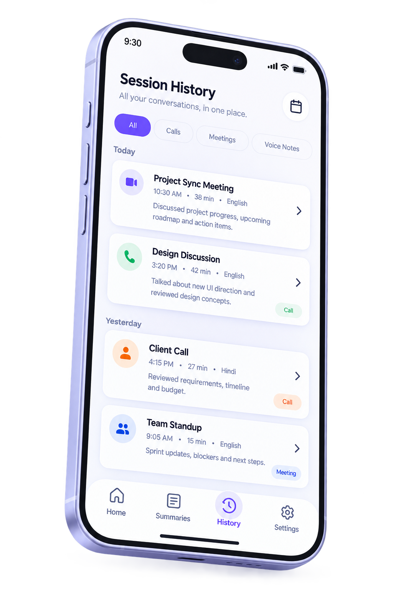

HearAI is an AI hearing assist for the conversations you're in and the meetings you're on. It listens, captions in real time, and keeps the words where you're already looking — in your hand, over your apps, or floating beside your cursor.
Direct download — no app store · free, no subscription
bring your own Gemini key · source on GitHub

A quiet foreground service captures the microphone and streams speech straight to Gemini. Fast interim words appear the moment they're heard, then settle into the final line. Silence never leaves your phone — an on-device gate holds it back, which keeps both your battery and your token spend down.

Turn it on once and HearAI starts itself the moment a call connects — captioning into the floating overlay and the notification, then stopping when you hang up. Put the call on speaker and the mic picks up both sides.

An opt-in caption strip floats over other apps and follows your finger wherever you park it. It shows the newest line while a session is running and gets out of the way when nothing is being said.

Long conversations get condensed on a schedule you set — every 2 to 15 minutes, or whenever you ask. Each summary covers only what's been said since the last one, and it's saved with the session so you can read it back later.

Each listening run is saved locally with its transcript and summaries — open one to read the full conversation or export it as text. Nothing syncs to a cloud, and you can have history auto-delete after 7, 30 or 90 days.

Enter your name and HearAI watches for it, screen off and app closed. You get a distinct buzz and a heads-up notification. This one never touches the network — the listening and the matching both happen on your device.
On Windows and macOS, HearAI lives in the tray as a small translucent caption box that trails your mouse — so you read what's being said without looking away from the slide, the screen share or the code. Pin it somewhere fixed if you'd rather it stayed put.
It's the same pipeline as the phone app: audio, a local voice gate, Gemini Live, text. Your key, your machine.
There's no source language to pick. HearAI detects what's being spoken and follows a switch mid-conversation without dropping the connection — and writes everything back in Latin script, so you can read a language you speak but don't read.
Free, no account, nothing to subscribe to. HearAI isn't on any app store — you download it straight from here, paste a Gemini key, and you're captioning in about a minute.
The builds aren't store-signed, so each OS will warn once: Android asks you to allow install from an unknown source; Windows SmartScreen needs More info → Run anyway; macOS needs the quarantine flag cleared —
xattr -dr com.apple.quarantine "/Applications/HearAI Desktop.app"
then open it normally. SHA-256 checksums are on the release page; the full source is on GitHub if you'd rather build it yourself.
HearAI is a solo, open-source project — the Android app, the desktop overlay and this page. I like building products end to end, from the first idea to the thing you install. If that's your kind of thing, take a look at what else I've made.
Visit my portfolio →